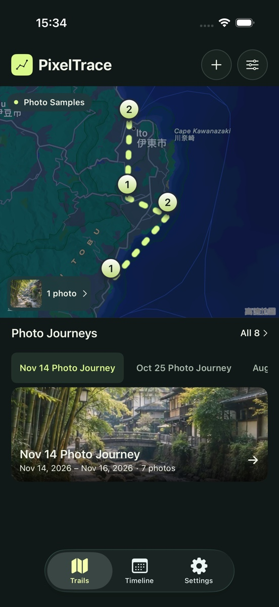
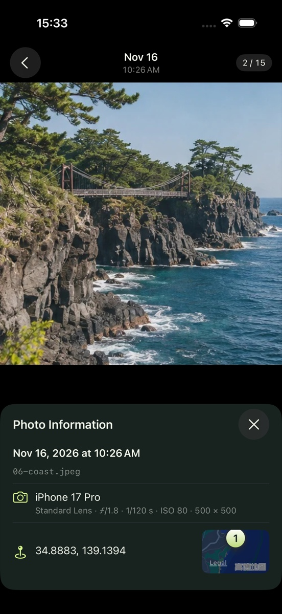

像素轨迹 · iOS 影像记录
每张照片，都有迹可循。
PixelTrace 把相册里散落的时间、地点和设备连成影像轨迹。沿着照片留下的线索，回看那一天。
探索影像轨迹
iPhone 和 iPad · iOS 18+

用照片，重新走一遍。
从地图找到拍下照片的地方，从时间线回到拍摄的那一刻。
把拍照地点连起来。
地图按拍摄顺序连接带 GPS 的照片。同一地点拍下的照片会聚在一起，轻点采样点就能回看。
从任何一天找起。
按日、月或旅程浏览照片，再用拍摄时间、设备、地点与 GPS 条件缩小范围。

看见一张照片的细节。
全屏翻阅与缩放照片。向上滑动查看拍摄时间、相机参数和地点小地图。

把这段旅程带走。
在三款海报中选择一种，把影像轨迹、照片数量和拍摄设备导出成 1080 × 1440 PNG。

你来决定照片的访问范围。
相册授权可随时到系统设置调整。轨迹、筛选与照片元数据在设备上处理。
隐私政策